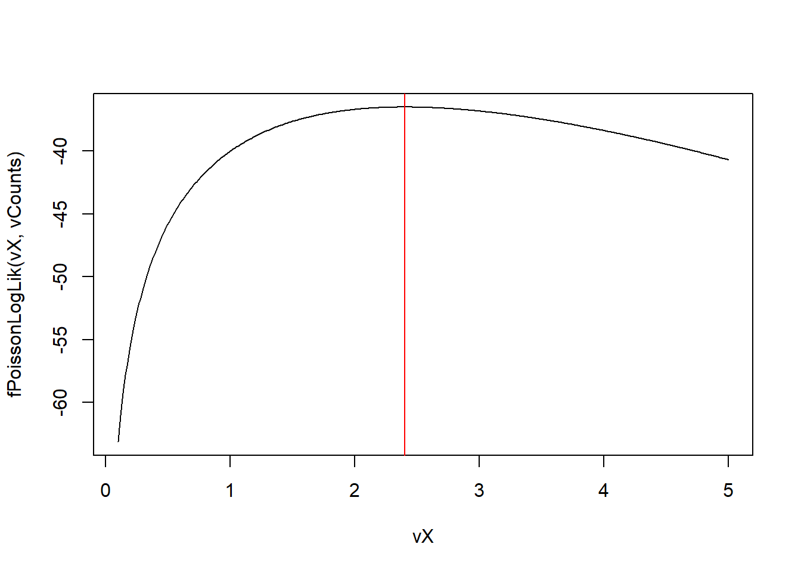
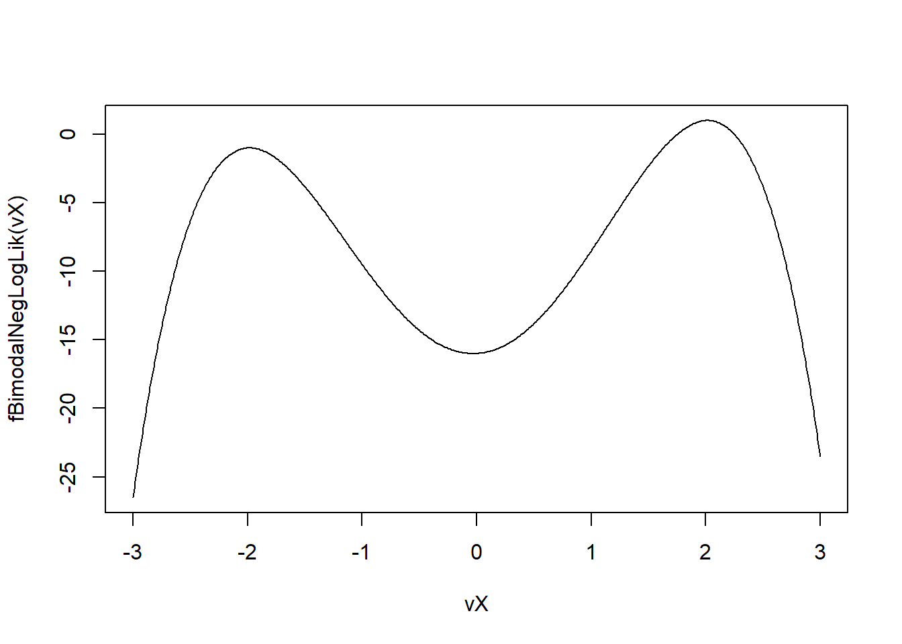
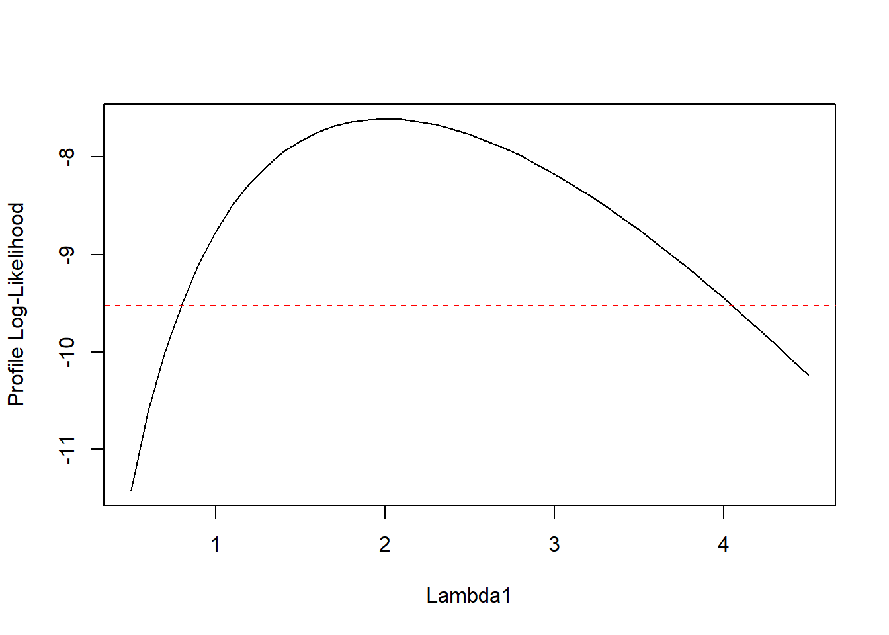

30 Extra extra exercises
31 Exercise Set 13: R Fundamentals and Data Structures (Review)
31.1 (1)
- Create a sequence of numbers from 10 down to -10, decreasing by 0.5, and store it in a vector
vSeq.
- Create a sequence of numbers from 10 down to -10, decreasing by 0.5, and store it in a vector
- How many elements are in
vSeq?
- How many elements are in
- Create a logical vector
bIsPositivewhich isTRUEfor elements ofvSeqgreater than 0, andFALSEotherwise.
- Create a logical vector
- Calculate the product of all elements in
vSeqthat are strictly between 1 and 5 (exclusive of 1 and 5).
- Calculate the product of all elements in
31.2 (2)
- Construct a 4x4 matrix
mIdentitywhich is an identity matrix.
- Construct a 4x4 matrix
- Construct a 4x4 matrix
mValueswhere elements are integers from 1 to 16, filled row-wise.
- Construct a 4x4 matrix
- Compute the matrix product
mC = mIdentity %*% mValues. What ismC?
- Compute the matrix product
- Replace the diagonal elements of
mValueswith 0.
- Replace the diagonal elements of
mIdentity <- diag(4)
mValues <- matrix(1:16, 4, 4, byrow = TRUE)
mC <- mIdentity %*% mValues
mC
#> [,1] [,2] [,3] [,4]
#> [1,] 1 2 3 4
#> [2,] 5 6 7 8
#> [3,] 9 10 11 12
#> [4,] 13 14 15 16
diag(mValues) <- 0
mValues
#> [,1] [,2] [,3] [,4]
#> [1,] 0 2 3 4
#> [2,] 5 0 7 8
#> [3,] 9 10 0 12
#> [4,] 13 14 15 031.3 (3)
- Write an R script that:
- Initializes a counter
iCountto 0 and a sumdRunningSumto 0. - Uses a
repeatloop. Inside the loop:- Generate a random integer between 1 and 20 (inclusive).
- Add this integer to
dRunningSum. - Increment
iCount. - If
dRunningSumexceeds 100 oriCountreaches 15,breakthe loop.
- Print the final
dRunningSumandiCount. Set seed to 777.
- Initializes a counter
31.4 (4)
- Create a list
lExperimentwith the following structure:-
sExpID: “EXP007” -
dParams: A named numeric vector withalpha = 0.05,beta = 1.2. -
lResults: An inner list containing:-
vObservations:c(10.2, 11.1, NA, 9.8, 10.5, NA, 10.9) -
sStatus: “Preliminary”
-
-
- Access the
betaparameter.
- Access the
- Calculate the mean of
vObservations, ignoring NAs.
- Calculate the mean of
- Change
sStatusto “Completed”.
- Change
lExperiment <- list(
sExpID = "EXP007",
dParams = c(alpha = 0.05, beta = 1.2),
lResults = list(
vObservations = c(10.2, 11.1, NA, 9.8, 10.5, NA, 10.9),
sStatus = "Preliminary"
)
)
lExperiment[["dParams"]][["beta"]]
#> [1] 1.2
mean(lExperiment[["lResults"]][["vObservations"]], na.rm = TRUE)
#> [1] 10.5
lExperiment[["lResults"]][["sStatus"]] <- "Completed"
lExperiment[["lResults"]][["sStatus"]]
#> [1] "Completed"31.5 (5)
- Create a data frame
dfSaleswith columnsMonth(character: “Jan”, “Feb”, “Mar”, “Apr”),ProductA_Units(numeric: 100, 120, 90, 110),ProductB_Units(numeric: 80, 85, 95, 70).
- Create a data frame
- Add a new column
Total_Unitswhich is the sum ofProductA_UnitsandProductB_Units.
- Add a new column
- Create a new column
ProductA_Sharewhich isProductA_Units / Total_Units.
- Create a new column
- Find the month(s) where
ProductB_Unitswere greater than 90.
- Find the month(s) where
dfSales <- data.frame(
Month = c("Jan", "Feb", "Mar", "Apr"),
ProductA_Units = c(100, 120, 90, 110),
ProductB_Units = c(80, 85, 95, 70)
)
dfSales <- transform(dfSales, ProductA_Share = ProductA_Units / (ProductA_Units + ProductB_Units))
dfSales$Month[dfSales$ProductB_Units > 90]
#> [1] "Mar"31.6 (6)
- Using
ifelse(), create a character vectorvCategorybased on a numeric vectorvScores = c(45, 88, 62, 95, 70, 55). -
vCategoryshould be “Fail” if score < 50, “Pass” if 50 <= score < 70, “Merit” if 70 <= score < 90, and “Distinction” if score >= 90. (Hint: you might need nestedifelsestatements).
31.7 (7)
- Write a
forloop that iterates 10 times. In each iterationk:- If
kis even, printkis even. - If
kis odd and also a multiple of 3, printkis odd and a multiple of 3. - Otherwise (if
kis odd and not a multiple of 3), printkis odd.
- If
for (k in 1:10) {
if (k %% 2 == 0) {
print(paste0(k, " is even."))
} else if (k %% 3 == 0) {
print(paste0(k, " is odd and a multiple of 3."))
} else {
print(paste0(k, " is odd."))
}
}
#> [1] "1 is odd."
#> [1] "2 is even."
#> [1] "3 is odd and a multiple of 3."
#> [1] "4 is even."
#> [1] "5 is odd."
#> [1] "6 is even."
#> [1] "7 is odd."
#> [1] "8 is even."
#> [1] "9 is odd and a multiple of 3."
#> [1] "10 is even."31.8 (8)
- Create a character vector
vsSentences = c("R is fun", "Data analysis with R", "Missing data NA", "Another sentence").
- Create a character vector
- Split the second sentence (“Data analysis with R”) into individual words.
vsSentences <- c("R is fun", "Data analysis with R", "Missing data NA", "Another sentence")
grep("R", vsSentences)
#> [1] 1 2
sub("R", "R Language", vsSentences)
#> [1] "R Language is fun" "Data analysis with R Language"
#> [3] "Missing data NA" "Another sentence"
strsplit(vsSentences[2], " ")
#> [[1]]
#> [1] "Data" "analysis" "with" "R"32 Exercise Set 14: Functions, Scope, and Vectorization Focus
32.1 (1)
- Write an R function
fNormalizeVectorthat takes a numeric vectorvXas input. - The function should return a “normalized” vector where each element
x_iis transformed to(x_i - mean(vX)) / sd(vX). - The function should handle cases where
sd(vX)is 0 (e.g., if all elements are the same) by returning a vector of zeros or NAs, with a warning. - Test with
c(1,2,3,4,5)andc(5,5,5,5).
fNormalizeVector <- function(vX) {
if (sd(vX) == 0) {
warning("Standard deviation is 0 or all NA. Returning NAs or zeros.")
return(rep(NA, length(vX))) # Or zeros: numeric(length(vX)
} else {
return((vX - mean(vX)) / sd(vX))
}
}
fNormalizeVector(c(1,2,3,4,5))
#> [1] -1.2649111 -0.6324555 0.0000000 0.6324555 1.2649111
fNormalizeVector(c(5,5,5,5))
#> Warning in fNormalizeVector(c(5, 5, 5, 5)): Standard deviation is 0 or all NA.
#> Returning NAs or zeros.
#> [1] NA NA NA NA32.2 (2)
- What is lexical scoping in R? Provide a simple example with a function defined inside another function, where the inner function uses a variable from the outer function’s environment.
Explain what result will be and why.
Result will be 25. fInner “closes over” the environment of fOuter where b (which is 20) was defined.
32.3 (3)
- Write a function
fCountValuesInRangesthat takes a numeric vectorvDataand a vector ofvBreakpoints(sorted) as input. - The function should count how many values in
vDatafall into each interval defined byvBreakpoints. For example, ifvBreakpoints = c(0, 10, 20, 30), the intervals are(-Inf, 0],(0, 10],(10, 20],(20, 30],(30, Inf). - Implement this using:
- A loop structure.
- R’s
cut()orfindInterval()function.
- R’s
- Compare their outputs for
vData = rnorm(1000, mean=15, sd=10)andvBreakpoints = c(0, 10, 20, 30).
# a
fCountValuesInRanges <- function(vData, vBreakpoints) {
full_breaks <- c(-Inf, sort(unique(vBreakpoints)), Inf)
counts <- numeric(length(full_breaks) - 1)
for (val in vData) {
for (j in 1:(length(full_breaks) - 1)) {
if (val > full_breaks[j] && val <= full_breaks[j + 1]) {
counts[j] <- counts[j] + 1
break
}
}
}
names(counts) <- cut((full_breaks[-1] + full_breaks[-length(full_breaks)])/2 , breaks=full_breaks, include.lowest=TRUE, right=TRUE) # approx interval names
return(counts)
}
fCountValuesInRangesCut <- function(vData, vBreakpoints) {
full_breaks <- c(-Inf, sort(unique(vBreakpoints)), Inf)
return(table(cut(vData, breaks = full_breaks, include.lowest = TRUE, right = TRUE)))
}
vData <- rnorm(1000, mean = 15, sd = 10)
vBreakpoints <- c(0, 10, 20, 30)
fCountValuesInRanges(vData, vBreakpoints)
#> [-Inf,0] (0,10] (10,20] (20,30] (30, Inf]
#> 81 258 394 209 58
fCountValuesInRangesCut(vData, vBreakpoints)
#>
#> [-Inf,0] (0,10] (10,20] (20,30] (30, Inf]
#> 81 258 394 209 5832.4 (4)
- Write a recursive R function
fRecursiveSumthat computes the sum of elements in a numeric vectorvXwithout using the built-insum()function or any loops. (Hint: sum ofvXisvX[1]+ sum ofvX[-1]). Define the base case.
32.5 (5)
- Create a list of matrices, where each matrix has 3 columns but a random number of rows (between 5 and 10) and contains random integers.
- Use
lapply(orsapplyif appropriate) to return a vector where each element is the sum of the diagonal elements (trace) of the corresponding matrix inlMatrices.
32.6 (6)
- Explain the difference between
apply(),lapply(),sapply(), andtapply(). For each, provide a very brief example of a situation where it would be the most appropriate choice.
apply(): applies function over margins of an array/matrix. Ex: apply(myMatrix, 1, sum) for row sums. lapply(): applies function to each element of a list, returns a list. Ex: lapply(myList, mean). sapply(): similar to lapply, but tries to simplify result to vec- tor/matrix. Ex: sapply(myList, length). tapply(): applies function to subsets of a vector, grouped by another vector (factor). Ex: tapply(iris$Sepal.Length, iris$Species, mean)
32.7 (7)
- Consider a task: for each number
ifrom 1 to 1,000,000, ifiis even, calculatei/2, ifiis odd, calculate3*i+1. - Implement this using:
- A
forloop storing results in a pre-allocated vector.
- A
- A vectorized approach using
ifelse().
- A vectorized approach using
- Compare their performance using
microbenchmark.
suppressMessages(library(microbenchmark))
#> Warning: pakke 'microbenchmark' blev bygget under R version 4.3.3
fLoopApproach <- function(x) {
vResults <- numeric(x)
for (i in 1:x) {
if (i %% 2 == 0) {
vResults[i] <- i / 2
} else {
vResults[i] <- 3 * i + 1
}
}
return(vResults)
}
fVectorizedApproach <- function(x) {
return(ifelse(x %% 2 == 0, x / 2, 3 * x + 1))
}
microbenchmark(fLoopApproach(100000), fVectorizedApproach(100000))
#> Unit: microseconds
#> expr min lq mean median uq
#> fLoopApproach(1e+05) 18080.7 18672.05 19641.000 19553.15 19841.95
#> fVectorizedApproach(1e+05) 1.4 2.10 30.531 2.85 14.55
#> max neval
#> 28494.3 100
#> 2250.7 10032.8 (8)
- You have a data frame:
df <- data.frame(
group = rep(c("A", "B", "C"), each = 4),
value = rnorm(12)
)- Using
tapply(oraggregateordplyrif allowed), calculate the range (max - min) ofvaluefor eachgroup.
33 Exercise Set 15: Likelihood Functions and Optimization (Medium/Hard)
33.1 (1) Likelihood of a Poisson Process
- A Poisson process models the number of events occurring in a fixed interval of time or space, given a constant average rate \(\lambda\). The probability of observing \(k\) events is \(P(K=k | \lambda) = \frac{\lambda^k e^{-\lambda}}{k!}\).
- Suppose you observe the following number of events in \(n=5\) independent intervals:
vCounts = c(2, 3, 1, 2, 4). - Write an R function
fPoissonLogLikthat takes a rate parameterdLambdaand the vectorvCountsas input, and returns the total log-likelihood for the observed counts.
- Write an R function
- The MLE for \(\lambda\) is simply the sample mean of the counts. Calculate this \(\hat{\lambda}_{MLE}\).
- Plot the log-likelihood function for \(\lambda \in [0.1, 5]\). Mark the MLE on your plot.
- Use
optimize()to find the value of \(\lambda\) that maximizes yourfPoissonLogLikfunction (rememberoptimizeminimizes by default). Compare it to your analytical MLE.
- Use
- (C++) Write a C++ function
poisson_log_lik_point_cpp(int k, double lambda)that calculates the log-likelihood for a single countkand a givenlambda. Then, write another C++ functiontotal_poisson_log_lik_cpp(Rcpp::IntegerVector counts, double lambda)that iterates through the counts vector and sums the log-likelihoods using your point function. Test this against your R version.
- (C++) Write a C++ function
fPoissonLogLik <- function(dLambda, vCounts) {
dSum <- 0
for (i in 1:length(vCounts)) {
dSum <- dSum + vCounts[i] * log(dLambda) - dLambda - factorial(vCounts[i])
}
return(dSum)
}
vCounts <- c(2, 3, 1, 2, 4)
vX <- seq(0.1, 5, 0.01)
plot(vX, fPoissonLogLik(vX, vCounts), type = "l")
abline(v = mean(vCounts), col = "red")
// [[Rcpp::depends(RcppArmadillo)]]
#include <RcppArmadillo.h>
using namespace Rcpp;
using namespace arma;
//[[Rcpp::export]]
double poisson_log_lik_cpp(int k, double lambda) {
return (k * log(lambda) - lambda - tgamma(k + 1));
}
//[[Rcpp::export]]
double total_poisson_log_lik_cpp(Rcpp::IntegerVector counts, double lambda) {
double dSum = 0.0;
for (int i = 0; i < counts.size(); i++) {
dSum += poisson_log_lik_cpp(counts[i], lambda);
}
return dSum;
}33.2 (2) Optimization of a Bimodal Likelihood (Reparameterization)
- Consider a custom likelihood function (unnormalized PDF) that is known to be bimodal for a parameter \(\theta\): \(L(\theta | \text{data}) \propto \exp(-(\theta^2 - 4)^2 + 0.5\theta)\).
- Write an R function
fBimodalNegLogLikfor the negative log-likelihood (ignoring any normalizing constant for the data part, just use the function of \(\theta\)).
- Write an R function
- Plot this negative log-likelihood function for \(\theta \in [-3, 3]\) to observe its shape and local minima.
- Use
optim()with method “BFGS” and several different starting values (e.g., -2, 0, 2) to find local minima. Do you find different minima?
- Use
- Suppose you know one mode is positive and one is negative. If you want to find the positive mode, how could you use reparameterization to restrict
optim’s search? For example, use \(\theta = \exp(\tilde{\theta})\) to ensure \(\theta > 0\). Define the new negative log-likelihood in terms of \(\tilde{\theta}\) and optimize for \(\tilde{\theta}\). Transform the result back to \(\theta\).
- Suppose you know one mode is positive and one is negative. If you want to find the positive mode, how could you use reparameterization to restrict
- Similarly, to find the negative mode, you might use \(\theta = -\exp(\tilde{\theta})\). Implement this.
fBimodalNegLogLik <- function(dTheta) {
return(-(dTheta^2 - 4)^2 + 0.5 * dTheta)
}
vX <- seq(-3, 3, 0.01)
plot(vX, fBimodalNegLogLik(vX), type = "l")
optim(-2, fBimodalNegLogLik, method = "BFGS")$par
#> [1] -1.147232e+15
optim(0, fBimodalNegLogLik, method = "BFGS")$par
#> [1] -0.03125764
optim(2, fBimodalNegLogLik, method = "BFGS")$par
#> [1] -1.160693e+34
fBimodalNegLogLik_Pos <- function(dTheta_tilde) {
dTheta <- exp(dTheta_tilde)
return(-(dTheta^2 - 4)^2 + 0.5 * dTheta)
}
dTheta_tilde_optim <- optim(0, fBimodalNegLogLik_Pos, method = "BFGS")$par
dTheta_optim <- exp(dTheta_tilde_optim)
dTheta_optim
#> [1] 3.726639e-06
fBimodalNegLogLik_Neg <- function(dTheta_tilde) {
dTheta <- -exp(dTheta_tilde)
return(-(dTheta^2 - 4)^2 + 0.5 * dTheta)
}
dTheta_tilde_optim <- optim(0, fBimodalNegLogLik_Neg, method = "BFGS")$par
dTheta_optim <- -exp(dTheta_tilde_optim)
dTheta_optim
#> [1] -1.01302e-0533.3 (3) Likelihood for Linear Regression with Known Variance
- Consider a simple linear regression \(y_i = \beta_0 + \beta_1 x_i + \epsilon_i\), where \(\epsilon_i \sim N(0, \sigma^2)\). Assume \(\sigma^2 = 1\) is known.
- Parameters to estimate are \(\theta = (\beta_0, \beta_1)\).
- Data:
set.seed(123); x_data = 1:20; y_data = 0.5 + 2*x_data + rnorm(20, 0, 1); - Write an R function
fRegressNegLogLik(vBeta, vY, vX)that calculates the negative log-likelihood.vBetais a vectorc(beta0, beta1). (Hint: \(L(\beta_0, \beta_1 | y, x, \sigma^2) = \prod_{i=1}^n \frac{1}{\sqrt{2\pi\sigma^2}} \exp\left(-\frac{(y_i - (\beta_0 + \beta_1 x_i))^2}{2\sigma^2}\right)\)).
- Write an R function
- Use
optim()(e.g., method “Nelder-Mead” or “BFGS”) to find the MLEs for \(\beta_0\) and \(\beta_1\). Use starting values likec(0,0).
- Use
- Compare your estimates with the coefficients obtained from
lm(y_data ~ x_data). They should be similar (thoughlmalso estimates \(\sigma^2\) if not fixed).
- Compare your estimates with the coefficients obtained from
- (Conceptual) If \(\sigma^2\) were also unknown, how would your parameter vector \(\theta\) and your reparameterization strategy for \(\sigma^2\) (to ensure positivity) change?
set.seed(12)
x_data <- 1:20
y_data <- 0.5 + 2 * x_data + rnorm(20, 0, 1)
fRegressNegLogLik <- function(vBeta, vY, vX, dSigma2 = 1) {
dSum <- 0
for (i in 1:length(vY)) {
dSum <- dSum + (vY[i] - (vBeta[1] + vBeta[2] * vX[i]))^2 / (2 * dSigma2)
}
return(dSum)
}
optim(c(0, 0), fRegressNegLogLik, vY = y_data, vX = x_data, method = "BFGS")$par
#> [1] -0.3311065 2.0476093
coef(lm(y_data ~ x_data))
#> (Intercept) x_data
#> -0.3311065 2.0476093
33.4 (4) Optimization with Constraints using constrOptim (or Penalty)
- Minimize \(f(x, y) = (x-1)^2 + (y-2)^2\) subject to the linear constraint \(x + y \ge 4\).
-
Method 1:
constrOptim(if familiar or allowed as it’s base R but more advanced)- The constraint can be written as \(1x + 1y - 4 \ge 0\).
constrOptimrequires constraints in the form \(U\theta - C \ge 0\). Define \(U\) and \(C\).
- The constraint can be written as \(1x + 1y - 4 \ge 0\).
- Use
constrOptimto solve this. You’ll need to provide the objective functionf, its gradient (optional,constrOptimcan approximate),ui(U matrix), andci(C vector). Choose a starting point that satisfies the constraint e.g., (3,3).
- Use
-
Method 2: Penalty Function
- Define a penalized objective function \(f_p(x, y) = f(x,y) + P \cdot \max(0, 4 - (x+y))^2\), where \(P\) is a large penalty constant (e.g., 1000).
- Use
optimwith “BFGS” or “Nelder-Mead” to minimize \(f_p(x,y)\) without explicit constraints.
- Use
- Compare results from both methods if possible. The analytical solution is \((x,y) = (1.5, 2.5)\).
33.5 (5) Profile Likelihood
- Revisit the Poisson likelihood from Q1 (
vCounts = c(2, 3, 1, 2, 4)). Suppose we have a more complex model with two parameters, \(\lambda_1\) and \(\lambda_2\), and the log-likelihood is \(LL(\lambda_1, \lambda_2)\). - Often, we are interested in inference for one parameter (e.g., \(\lambda_1\)) while treating the other as a nuisance parameter. The profile log-likelihood for \(\lambda_1\) is defined as \(PL(\lambda_1) = \max_{\lambda_2} LL(\lambda_1, \lambda_2)\).
- Let \(LL(\lambda_1, \lambda_2) = \sum_{i=1}^3 \log(\text{dpois}(vCounts[i], \lambda_1)) + \sum_{i=4}^5 \log(\text{dpois}(vCounts[i], \lambda_2))\). (This is an artificial separation for demonstration).
- Write an R function
fCombinedLogLik(vLambda, vC)wherevLambda = c(lambda1, lambda2).
- Write an R function
- Write an R function
fProfileLogLik_L1(dLambda1_fixed, vC)that, for a fixeddLambda1_fixed, usesoptimizeto find thedLambda2that maximizesfCombinedLogLik(with thatdLambda1_fixed), and returns this maximized log-likelihood value.
- Write an R function
- Create a sequence of
dLambda1_fixedvalues (e.g., from 0.5 to 3.5). For each value, calculatefProfileLogLik_L1.
- Create a sequence of
- Plot the profile log-likelihood \(PL(\lambda_1)\) against
dLambda1_fixed. The maximum of this plot gives an estimate for \(\lambda_1\). From this plot, can you estimate an approximate confidence interval for \(\lambda_1\)? (e.g., points where \(PL(\lambda_1) > \max(PL) - \text{qchisq}(0.95, 1)/2\)).
- Plot the profile log-likelihood \(PL(\lambda_1)\) against
vCounts <- c(2, 3, 1, 2, 4)
fCombinedLogLik <- function(vLambda, vC) {
dSum1 <- 0.0
dSum2 <- 0.0
for (i in 1:3) {
dSum1 <- dSum1 + log(dpois(vCounts[i], vLambda[1]))
}
for (i in 4:5) {
dSum2 <- dSum2 + log(dpois(vCounts[i], vLambda[2]))
}
return(dSum1 + dSum2)
}
fProfileLogLik_L1 <- function(dLambda1_fixed, vC) {
# Objective for optimize: function of lambda2
obj_for_lambda2 <- function(dLambda2) {
fCombinedLogLik(c(dLambda1_fixed, dLambda2), vC)
}
# Optimize returns list, $maximum is the value of objective function
optimize(obj_for_lambda2, interval=c(0.01, 10), maximum=TRUE)$objective
}
lambda1_seq <- seq(0.5, 4.5, 0.1)
profile_loglik_values <- sapply(lambda1_seq, fProfileLogLik_L1, vC=vCounts)
plot(lambda1_seq, profile_loglik_values, type="l", xlab="Lambda1", ylab="Profile Log-Likelihood")
abline(h = max(profile_loglik_values) - qchisq(0.95,1)/2, col="red", lty=2)